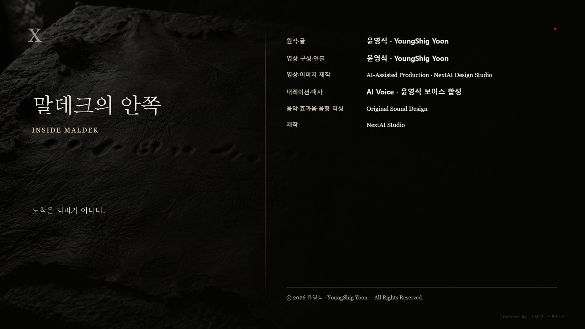

一. 낮에도 열린다
닷새째 낮에도 원이 열렸다.
처음에는 하루에 한 번이었다. 사흘째부터 두 번이 되었고 닷새째에는 정오와 해질녘에 각각 열렸다. 마을 사람들은 이제 그것을 보고도 하던 일을 멈추지 않았다. 멈춘다고 달라지는 것이 없다는 것을 알았기 때문이다.
라스가 마당으로 내려왔다.
그가 마당에 선 것은 왼손을 다친 뒤 처음이었다. 손은 아직 천으로 감겨 있었다.
라스: "저건 무기가 아니야."
마당이 조용해졌다.
라스: "측량이야. 우리가 여기 있는지 재는 게 아니라, 여기가 어디인지를 재는 거야. 다 재면 온다."
하람: "언제요."
라스: "닷새 안에."
아무도 그를 믿지 않았고, 아무도 그의 말을 부정하지도 않았다. 하늘에 대해 넉 달 동안 한마디도 하지 않던 사람이 처음 입을 열어서 한 말이 그것이었다.
하람: "왜 이제 말하시오."
라스: "너희가 못 견딜 거라고 생각했어."
하람: "그건 우리가 정하는 거요."
라스는 대답하지 않았다.
그 말이 맞았다.
하람: "오면 어떻게 되오."
라스: "정렬층을 다시 세워."
하람: "그게 무슨 뜻이오."
라스: "이 땅에 있는 모든 기준이 새로 잡힌다는 뜻이야. 지하의 벽도, 네가 뜬 가죽도, 능선의 돌도 전부 기준을 잃어."
하람은 그 말을 이해하는 데 시간이 걸렸다.
부수는 것이 아니었다. 그대로 두는데 읽을 수 없게 되는 것이었다. 열일곱 해 전 말데크에서 하늘이 0.4도 움직였을 때 지구의 유적 전부가 한꺼번에 틀린 것과 같은 일이 이번에는 의도적으로 일어난다.
하람: "그럼 닷새 안에 뭘 해야 하오."
라스: "남길 게 있으면 지금 남겨."
二. 뺀 값
그날 밤 네 사람이 지하로 내려갔다.
아라와 라스, 윤서, 그리고 하람이었다.
하람은 따라온 것이 아니었다. 라스가 불렀다.
하람: "왜 나요."
라스: "우리 둘만 보면 우리 둘의 판단이 돼."
하람: "나는 당신들을 안 믿소."
라스: "그러니까 부른 거야."
횃불은 하나만 들었다.
세 겹 구조물의 안쪽 도착층은 비어 있었다. 열흘 전 스물넷이 서 있던 자리였다.
하람: "여기서 뭘 하려는 거요."
라스: "이건 무기가 아니라고 했잖아."
하람: "그러면 뭐요."
라스: "관문이야."
하람이 원통을 보았다. 열흘 전 그가 끌로 벌린 이음매가 아직 그대로였다.
라스: "저 안에 값이 하나 들어가 있어. 그것 때문에 지금 안 열려."
하람: "누가 넣었소."
라스는 대답하지 않고 이음매 앞에 앉았다.
값을 빼려면 손을 넣어야 했다. 왼손은 쓸 수 없었다. 오른손으로 넣으면 팔의 각도가 반대가 되어 축을 잡는 손끝의 방향이 뒤집힌다.
그는 오래 앉아 있었다.
아라: "내가 할까."
라스: "네 손은 규격을 못 읽어."
아라: "네가 말해 주면 되잖아."
라스: "말로 옮기면 값이 아니게 돼."
그것이 이 종족의 문제였고, 열일곱 해 동안 아무도 그것을 고치지 못했다.
라스는 오른손을 넣었다.
축을 찾는 데 처음보다 오래 걸렸다.
르네의 규격선은 방향을 가진다. 왼손으로 읽으면 손끝이 선을 순방향으로 지나가고 값이 그대로 들어온다. 오른손으로 읽으면 반대로 지나간다. 그는 읽은 것을 머릿속에서 한 번 뒤집어야 했고, 뒤집는 동안 값이 흐트러지지 않게 붙잡아야 했다.
열아홉에 규격을 정할 때 그는 왼손잡이였다. 그래서 순방향을 왼손 기준으로 정했다.
그가 정한 것이 그를 막고 있었다.
0.4도.
넣을 때는 넣기만 하면 되었다. 뺄 때는 무엇을 빼는지 알아야 했다.
원통이 돌았다.
三. 열린 것
도착층 안쪽이 열렸다.
관문이 열린다는 것은 문이 생기는 일이 아니다. 비어 있던 공간에 비어 있지 않은 것이 있게 되는 일이다. 네 사람이 보는 앞에서 어둠의 성질이 바뀌었다.
공기가 움직이지 않았다.
관문은 두 곳을 뚫어 잇는 것이 아니다. 도착을 실현하는 것이다. 이쪽의 도착층과 저쪽의 도착층이 같은 자리가 되고, 중간 하중층이 그 차이를 받아 낸다. 그래서 압력이 한쪽으로 쏠리지 않는다.
저쪽 방은 열일곱 해 동안 봉해져 있었다. 그 안의 공기도 열일곱 해 동안 그 자리에 있었다.
숨을 쉴 수는 있었다. 다만 아무 냄새도 나지 않았다.
윤서: "저기 어디예요."
라스: "말데크."
윤서: "말데크는 없어졌잖아요."
라스: "행성이 없어진 거야. 조각은 남았어."
말데크 파편 하나의 안쪽이었다. 붕괴하던 밤 대륙이 접히면서 지각 아래 구조물 하나가 통째로 뜯겨 나갔고, 그 조각이 열일곱 해 동안 소행성대를 돌았다.
그 안에 기록실이 있었다.
그리고 그 기록실은 지구의 이 구조물과 짝이었다. 두 개가 한 쌍으로 설계된 관문이었다. 그래서 지구 쪽 절반이 여기 묻혀 있었고, 라스가 세운 적이 없는데도 그의 규격으로 세워져 있었다.
하람: "당신 것이 맞았군."
라스: "내 방식이 맞아. 내 것은 아니야."
하람: "그게 그거 아니오."
라스: "아니야. 그걸 지금 확인하러 가는 거야."
四. 기록실
기록실은 낮고 넓었다.
말데크의 다른 구조물처럼 세 겹이었다. 바깥 정렬층에 좌표가 새겨져 있었고, 중간 하중층이 무게를 받고 있었고, 안쪽에 기록이 있었다.
기록은 문서가 아니었다.
벽 전체가 기록이었다. 8편의 그 벽과 같은 방식이었다. 다만 이곳의 벽은 훨씬 오래되었고, 훨씬 촘촘했고, 층이 하나 더 있었다.
열일곱 해 동안 아무도 들어오지 않은 방이었다.
먼지가 없었다. 공기가 움직이지 않았기 때문이다. 벽의 홈에 들어간 것도 없었고 바닥에 쌓인 것도 없었다. 붕괴하던 밤 이 방은 뜯겨 나가면서 그대로 봉해졌다.
한쪽 벽이 찢겨 있었다.
찢긴 자리는 매끈하지 않았다. 대륙이 접히던 밤 지각이 통째로 뜯겨 나가면서 벽도 함께 뜯겼고, 뜯긴 단면이 그대로 굳었다. 그 너머에 바깥이 있었다.
바깥에는 별이 없었다.
조각이 있었다. 크고 작은 암석들이 같은 방향으로 천천히 돌고 있었고, 서로 부딪히지 않을 만큼의 거리를 두고 있었고, 어느 것도 빛을 내지 않았다.
윤서가 그중 하나를 오래 보았다.
다른 조각들과 다르게 한쪽 면이 곡면이었다. 매끈하고 둥글고 사람의 손이 만든 것이 분명한 면이었다. 돔 도시의 껍질이었다.
윤서: "저기 사람이 살았어요?"
아라: "응."
윤서: "얼마나요."
아라: "너희 마을보다 많이."
아이는 더 묻지 않았다.
윤서가 벽 근처에 서 있다가 뒤로 물러났다.
아라: "들려?"
윤서: "아니요."
아라: "그럼 왜 물러나."
윤서: "안 들려서요."
지구의 벽에서는 수만 개가 들어왔다. 여기서는 아무것도 들어오지 않았다. 지구의 벽은 받은 것을 새긴 벽이고, 이 벽은 새기는 방법을 정한 벽이기 때문이다.
라스는 네 번째 층을 처음 보았다.
바깥에서부터 좌표, 수신 기록, 명령, 그리고 그 아래에 결정 기록이 있었다.
무엇을 새기기로 정했는지가 아니라, 어떻게 새기기로 정했는지가 적힌 층이었다.
라스는 오른손으로 읽었다.
느렸다. 뒤집어 읽는 데다 층이 촘촘했다. 지구의 벽은 한 뼘에 선이 열둘이었는데 여기는 서른이 넘었다. 손끝으로 구분되는 한계에 가까웠다.
한 시간쯤 지나서 그는 손을 뗐다.
아라: "뭐라고 되어 있어."
라스: "여럿이 온 것을 하나로 줄이는 방법."
아라: "그게 다야?"
라스: "그게 다야. 그리고 그 아래에 그 방법을 정한 자리가 있어."
五. 두 개의 자국
결정 기록의 마지막에 자국이 두 개 있었다.
이름이 아니었다. 서명도 아니었다. 벽에 손을 대고 눌러 굳힌 자국이었다.
하나는 규격선 안쪽에 있었다. 손가락이 벌어진 각도, 손바닥이 닿은 넓이, 힘이 들어간 자리가 전부 수치로 환산되어 주변에 새겨져 있었다. 르네의 방식이었다.
다른 하나는 규격선 바깥에 있었다. 아무것도 환산되지 않았다. 자국만 있었다. 옆에 다듬지 않은 작은 광물이 하나 박혀 있었다.
치우의 방식이었다.
두 자국은 나란했다. 닿아 있지는 않았다.
아라가 그 앞에 오래 서 있었다.
아라: "이거 언제 거야."
라스: "우리보다 앞이야. 한참 앞."
아라: "그럼 이 손은 누구 거야."
라스: "이름이 없어. 이름을 안 남긴 게 아니라, 이 층에는 이름을 새기는 자리가 없어."
두 손자국은 어느 개인의 것이 아니었다. 두 종족이 처음 합의하던 자리에 각자 한 사람씩 손을 댔고, 그 두 사람이 누구였는지는 이 벽에 없었다.
아라: "누가 강요한 게 아니네."
라스: "아니야. 같이 정했어."
전쟁이 왜 일어났는지가 그 자리에 있었다.
치우는 여럿을 감지한다. 르네는 하나를 새긴다. 두 종족이 함께 무언가를 세우려면 여럿을 하나로 줄이는 절차가 필요했고, 그 절차를 두 종족이 합의해서 정했다.
합의가 있었기 때문에 관문이 작동했다. 관문이 작동했기 때문에 두 종족은 서로의 세계에 도착할 수 있었고, 도착할 수 있었기 때문에 문명이 섰다.
같은 절차가 위험 신호에도 적용되었다.
수만 개의 서로 다른 위험이 하나의 방향으로 줄어들었고, 그 방향이 벽에 새겨졌고, 새겨진 것이 명령이 되었다.
아무도 배신하지 않았다.
아무도 거짓말하지 않았다.
두 종족이 서로를 가장 잘 쓰기로 한 합의가 두 종족의 세계를 부쉈다.
하람: "그럼 잘못한 사람이 없다는 거요?"
라스: "잘못한 사람은 있어."
라스: "줄이기로 정한 사람들."
하람: "그게 누군데."
라스는 두 자국을 가리켰다.
그리고 오래 서 있었다.
열일곱 해 동안 그는 자기가 한 일을 하나로 정리해 두고 있었다. 명령을 받았고, 값을 지울 수 있었고, 지우지 않았다. 그것이 그가 할 수 있었던 저항이었다.
이 벽 앞에서 그 정리가 무너졌다.
0.4도를 남긴 것은 규격 바깥으로 나간 일이 아니었다. 규격 안에서 할 수 있는 유일한 일이었다. 그는 규격을 깨지 않았다. 깨는 방법을 몰랐던 것이 아니라, 깰 수 있다는 생각을 해 본 적이 없었다. 규격을 정한 것이 자기 손이었기 때문이다.
라스: "나는 저항한 게 아니야."
아라: "그럼 뭔데."
라스: "규격이 허락한 만큼만 어긋난 거야. 그건 저항이 아니라 오차야."
아라는 반박하지 않았다.
그녀에게도 정리해 둔 것이 있었다. 축을 비튼 것은 방어였다. 수만 명이 죽는 것을 늦추기 위해서였고, 실제로 늦췄고, 그 사이에 생존자들이 궤도로 올라갔다.
그런데 그 비틀림이 라스의 조준을 어긋나게 했다.
어긋난 네 발이 핵을 정중앙에서 빗겨 쳤고, 그래서 행성은 폭발하지 않고 접혔다. 정중앙을 맞았으면 말데크는 부서졌을 것이다. 부서진 행성에는 접히는 대륙도 푸른 균열도 없다.
아라: "내가 사람들을 살렸어."
라스: "그래."
아라: "그리고 내가 그 행성을 접었어."
라스: "그것도 그래."
두 사람은 그 자리에서 서로를 위로하지 않았다.
六. 보내기
라스가 벽에서 물러나 방 안쪽을 둘러보았다.
찢긴 벽 반대편에 낮은 대가 있었다. 기록실은 기록만 하는 방이 아니었다. 말데크의 모든 관문은 자기가 새긴 것을 다른 관문으로 넘길 수 있어야 했고, 그 자리가 여기였다.
라스: "이걸 남겨야 해."
아라: "누구한테."
라스: "아무한테나. 남는 쪽한테."
하람: "닷새 뒤에 온다면서. 도망칠 생각은 안 하시오?"
라스: "도망쳐도 저건 안 지워져."
하람: "그럼 놔두면 되잖소."
라스: "놔두면 저들이 기준을 새로 세워."
기준이 새로 세워지면 이 벽은 그대로 남는데 읽을 수 없게 된다. 좌표층이 가리키는 자리가 없어지고, 결정층의 값이 무엇의 값인지 알 수 없게 된다.
부수는 것보다 확실하다. 부순 것은 부순 흔적이 남지만 기준을 바꾼 것은 아무 흔적도 남지 않는다.
라스: "닷새 뒤에 이건 여기 그대로 있어. 아무도 못 읽을 뿐이야."
하람: "그럼 지금 아니면 영영이라는 거요?"
라스: "그래."
넉 달 전 그는 적지 않기로 했다. 적으면 하나로 적히기 때문이었다. 열흘 전에는 말하지 않기로 했다. 말하면 골라지기 때문이었다.
이번에는 달랐다.
라스: "요약하지 않고 보내면 돼."
아라: "그게 돼?"
라스: "안 돼. 그래서 여태 아무도 안 했어."
기록실의 송신 장치는 값을 압축해서 보낸다. 압축은 줄이는 일이다. 줄이지 않고 보내려면 수만 개를 수만 개인 채로 밀어 넣어야 한다.
르네의 장치는 그것을 못 한다.
치우는 할 수 있다.
아라: "내가 가진 걸 다 넣으면 돼."
라스: "다 넣으면 네 안에 아무것도 안 남아."
아라: "알아."
열일곱 해 동안 아라가 붙잡고 있던 것이었다. 달의 지하 공명실에서 하나씩 끊어 내면서도 놓지 않은 것들이었다. 물에 갇힌 사람의 마지막 계산, 아이를 미는 손의 방향, 어머니가 부르던 노래.
수만 개였다.
하람: "다른 방법은 없소?"
아라: "있어. 줄이면 돼."
하람은 더 묻지 않았다.
아라가 벽에 손을 댔다.
윤서가 옆에 있었다. 아이는 손을 대지 않았다. 열흘 전 마당에서 돌아선 뒤로 아이는 자기가 무엇을 하지 않기로 했는지 알고 있었고, 오늘도 그것을 지켰다.
윤서: "제가 도울까요."
아라: "도우면 네 안에도 남아."
윤서: "남으면 안 돼요?"
아라: "너는 아직 놓는 법을 몰라."
아라가 눈을 감았다.
하나씩 보낼 수는 없었다. 하나씩 보내면 순서가 생기고, 순서가 생기면 먼저 간 것과 나중에 간 것 사이에 무게 차이가 생긴다. 무게 차이가 생기면 그것도 줄이는 일이다.
한꺼번에 놓아야 했다.
아라는 열일곱 해 동안 그것들을 붙잡는 방식으로만 살았다. 놓는 동작을 해 본 적이 없었다.
그녀는 붙잡고 있던 손을 폈다.
수만 개가 한꺼번에 나갔다. 줄어들지 않은 채로 나갔기 때문에 신호는 컸다. 압축된 신호가 실 한 가닥이라면 이것은 뭉치였다.
나가는 동안 아라는 그것들을 마지막으로 한 번씩 지나쳤다. 지나친다기보다 그것들이 그녀를 지나갔다.
물에 갇힌 사람의 계산.
아이를 미는 손의 방향.
남쪽 문이 아직 열린다는 말.
어머니가 부르던 노래.
노래가 지나갈 때 그녀는 손을 다시 오므릴 뻔했다.
오므리지 않았다.
기록실이 울렸다.
신호는 두 방향으로 갔다. 하나는 지구의 지하로, 짝이 되는 구조물로 들어갔다. 하나는 바깥으로 나갔다.
바깥은 좁지 않았다.
七. 남은 한 문장
아라는 눈을 뜨지 않았다.
신호가 끝난 뒤에도 그녀는 벽에 손을 댄 채로 서 있었다. 라스가 이름을 불렀고 하람이 어깨를 건드렸는데 반응이 없었다.
비어 있다는 것은 아무것도 느끼지 못한다는 뜻이 아니었다.
열일곱 해 동안 아라는 자기 생각과 남의 생각을 구분하는 방식으로 자기를 확인해 왔다. 남의 것이 이만큼 있고 그 바깥이 나다. 그것이 그녀가 자기를 아는 유일한 방법이었다.
남의 것이 사라지자 바깥이 어디인지 알 수 없게 되었다.
윤서가 앞으로 나갔다.
아이는 아라의 손을 벽에서 떼어 냈다. 그리고 자기 손을 그 자리에 넣었다.
넉 달 전 아라가 감응망 안에 자기 기억을 놓아 아이를 끌어냈다. 아이가 그것을 붙잡을 수 있었던 이유는 그것이 자기 것이 아니었기 때문이었다.
지금은 반대였다.
윤서에게는 아라에게 줄 기억이 없었다. 열세 살이 가진 것은 물 긷던 길과 동생의 손과 지난가을에 들은 스무 마디뿐이었다.
아이는 그것을 주지 않았다.
대신 자기 손을 아라의 손이 있던 자리에 두고 가만히 있었다. 붙잡을 것을 주는 것이 아니라 붙잡을 것이 있던 자리를 표시하는 일이었다.
아라가 눈을 떴다.
아라: "너였구나."
윤서: "저 아무것도 안 줬어요."
아라: "알아."
네 사람이 관문을 지나 돌아왔다. 라스가 마지막으로 나오면서 정렬핵에 0.4도를 다시 넣었다. 관문이 닫혔다.
지상으로 올라오니 새벽이었다.
하늘에 원이 열려 있었다.
이번에는 닫히지 않았다.
가장자리의 테가 두꺼워졌고, 원이 커졌고, 옆에 두 번째 원이 열렸다. 그다음에 세 번째가 열렸다.
측정이 끝난 것이 아니었다. 신호를 잡은 것이었다.
닷새가 하루로 줄었다.
하람: "당신들이 부른 거요."
라스: "그래."
하람: "알면서 보냈소?"
라스: "알면서 보냈어."
하람은 하늘을 보았다. 열흘 전에 그는 이 사람들이 하늘을 부른다고 믿었고, 그때는 틀렸고, 지금은 맞았다.
그런데 지금은 왜 부른 줄을 알았다.
그는 마을로 내려가지 않았다.
내려가서 말하려면 줄여야 했다. 네 층과 두 손자국과 수만 개를 마당에서 설명할 방법이 없었고, 설명하려고 입을 여는 순간 그것은 이레 만에 다시 한 문장이 될 것이다. 저들이 하늘을 부른다. 그 문장은 이번에는 사실이었고, 사실이어서 더 나빴다.
그는 지하 입구 옆에 앉았다. 품에서 굳은 가죽 한 장을 꺼냈다. 열흘 전 벽에서 뜬 것 중 아직 마을 기록실에 넣지 않은 마지막 장이었다.
거기에 무언가를 적으려고 했다.
기록실에서 본 것은 네 층이었다. 좌표, 수신 기록, 명령, 결정. 그리고 두 개의 손자국.
그것을 이 가죽에 적으려면 줄여야 했다.
하람은 그 사실을 알았다. 오늘 아침에 알게 되었다.
그는 오래 앉아 있다가 한 문장만 적었다.
도착은 파괴가 아니다.
적고 나서 그 문장을 보았다.
이것도 줄인 것이다. 네 층과 두 자국과 수만 개를 한 문장으로 줄인 것이다. 그가 방금 알게 된 그 짓을 그가 방금 했다.
그는 지우지 않았다.
지우면 아무것도 안 남는다. 남기면 틀린 채로 남는다. 틀린 채로 남은 것은 언젠가 누가 그 틀림을 발견한다.
하람은 가죽을 접어 품에 넣었다.
하늘에서 네 번째 원이 열렸다.
그 문장은 오래 남았다.
마을이 옮겨 갈 때 함께 갔고, 다음 세대가 종이라고 부르는 것으로 옮겼고, 그다음 세대가 또 옮겼다. 옮길 때마다 눌러서 떴고, 옮길 때마다 한 글자씩 어긋났다.
수천 년 뒤 어느 교정자가 그 문장을 받게 된다.
그는 그것을 오식이라고 부를 것이다.
그리고 고치지 않을 것이다.
